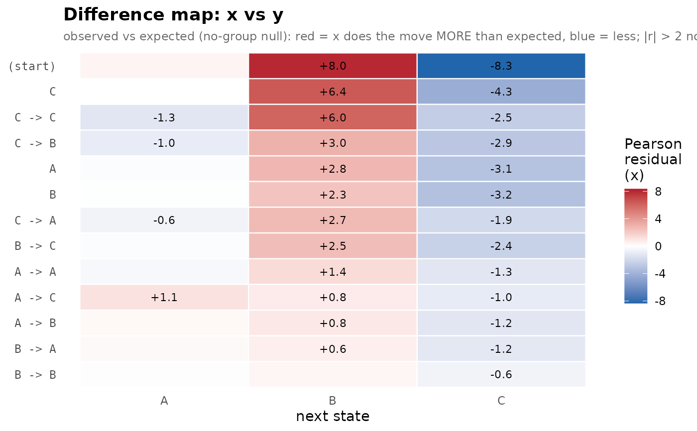
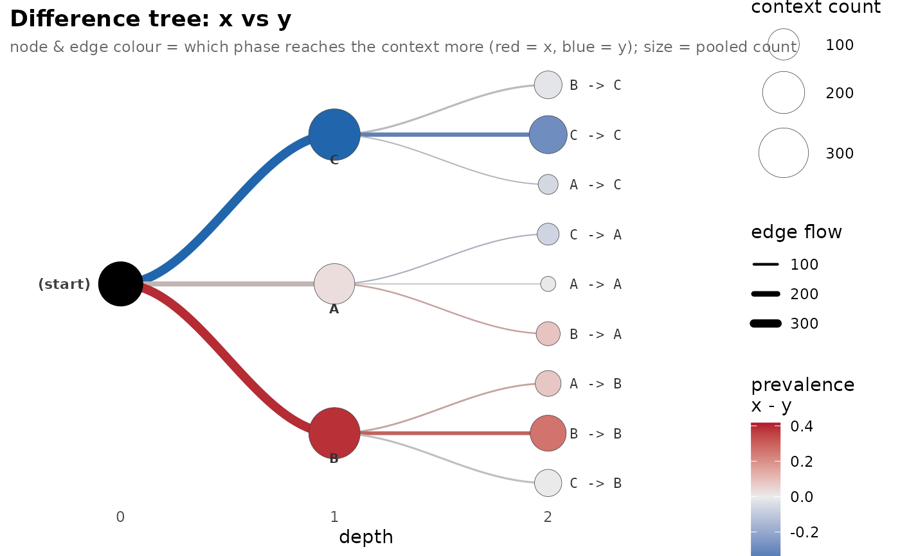

A per-context map of how two groups differ in their next-state
predictions: one row per shared context, one column per next state.
By default each cell is the Pearson standardized residual of the first
group against the no-difference null (red = more than expected, blue =
less; |r| > 2 notable), which is support-aware and decomposes
the per-context \(G^2\); measure = "probability" shows the raw
P(group1) - P(group2) instead.
Arguments
- group
A
transitiontrees_group.- groups
Optional length-2 character vector naming the two groups to subtract (
group1 - group2). Defaults to the first two; it is required when the object has more than two groups.- depth
Integer or
NULL. Restrict to contexts of this depth (depth = 1gives the order-1 transition-matrix difference).NULL(default) uses all shared contexts.- min_count
Integer. Drop contexts whose count in either group is below this. Default 1.
- comparison
Optional
transitiontrees_group_comparison(fromcompare_groups()). When supplied, contexts whose behavioral difference is significant (jsd_padj < alpha) are starred, so the map shows which differences survived the permutation test.- alpha
Numeric. FDR threshold for the significance stars when
comparisonis given. Default 0.05.- annotate
Logical. Print the signed difference in each cell (
layout = "tile"only). DefaultTRUE.- layout
One of
"tile"(default; per-context heatmap over all shared contexts) or"tree"(the horizontal context-tree phylogram drawn on a pooled backbone, with each node and branch coloured by which group reaches that context more — red for the first group, blue for the second; node size = pooled count).- measure
For
layout = "tile", what each cell encodes:"residual"(default) is the Pearson standardized residual of the first group against the no-group null (observed vs expected from the context's margins) — support-aware and decomposing the per-context \(G^2\);"probability"is the raw next-state probability differenceP(group1) - P(group2). Ignored by"tree".
See also
compare_groups for the significance test.
Examples
# \donttest{
gx <- replicate(60, sample(c("A","B","C"), 8, replace = TRUE,
prob = c(.2,.6,.2)), simplify = FALSE)
gy <- replicate(60, sample(c("A","B","C"), 8, replace = TRUE,
prob = c(.2,.2,.6)), simplify = FALSE)
grp <- context_tree(c(gx, gy), group = rep(c("x","y"), each = 60),
max_depth = 2L)
plot_difference(grp) # residual heatmap

plot_difference(grp, layout = "tree") # difference on the tree map

# }